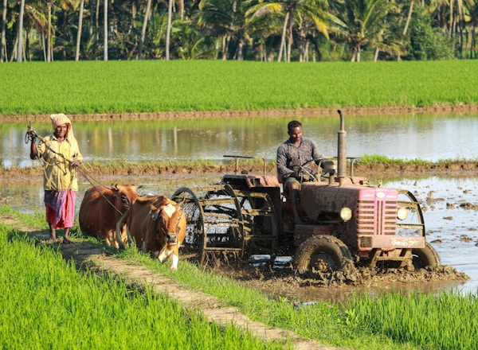

Cultivo orgânico
Produção sem agrotóxicos, com manejo responsável e foco em qualidade.
Agricultura sustentável desde 1995
Produzimos, selecionamos e entregamos alimentos frescos com práticas responsáveis, cuidado com o solo e compromisso com famílias e parceiros.

Nossa história
Há mais de 30 anos, a AgroVerde une experiência rural, manejo consciente e tecnologia para produzir alimentos de qualidade sem abrir mão da preservação ambiental.
Trabalhamos com práticas regenerativas, uso eficiente de água e cuidado constante em cada etapa da produção.
Conheça a AgroVerdeO que fazemos
Produção sem agrotóxicos, com manejo responsável e foco em qualidade.
Orientação técnica para produtores que buscam produtividade sustentável.
Entrega de alimentos frescos selecionados direto da fazenda.
Formação sobre hortas, compostagem e produção consciente.
Produtos em destaque

Cultivados sem agrotóxicos e colhidos no ponto certo.
R$ 12,90/kg
Folhas frescas, crocantes e prontas para refeições leves.
R$ 4,50/un
Selecionados com sabor intenso e aparência natural.
R$ 16,90/bandejaVamos conversar?